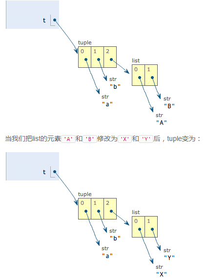

<!DOCTYPE html>
<html>
<head><meta name="generator" content="Hexo 3.8.0">
  <meta charset="utf-8">
  
  <title>Aloha | Gaga酱的奇思妙想</title>
  <meta name="viewport" content="width=device-width, initial-scale=1, maximum-scale=1">
  
    <meta name="keywords" content="萌萌の嘎嘎">
  
  
  
  
  <meta name="description" content="我李汉三又回来啦~">
<meta name="keywords" content="python,认真学习の日常">
<meta property="og:type" content="article">
<meta property="og:title" content="磨刀霍霍：我李汉三又回来写代码啦~">
<meta property="og:url" content="http://yoursite.com/2018/12/18/磨刀霍霍：我李汉三又回来写代码啦/index.html">
<meta property="og:site_name" content="Gaga酱の奇思妙想">
<meta property="og:description" content="我李汉三又回来啦~">
<meta property="og:locale" content="zh-Hans">
<meta property="og:image" content="http://yoursite.com/2018/12/18/磨刀霍霍：我李汉三又回来写代码啦/1.png">
<meta property="og:updated_time" content="2019-04-10T17:00:02.639Z">
<meta name="twitter:card" content="summary">
<meta name="twitter:title" content="磨刀霍霍：我李汉三又回来写代码啦~">
<meta name="twitter:description" content="我李汉三又回来啦~">
<meta name="twitter:image" content="http://yoursite.com/2018/12/18/磨刀霍霍：我李汉三又回来写代码啦/1.png">
  
  <link rel="icon" href="/css/images/favicon.png">
  
    <link href="//fonts.googleapis.com/css?family=Source+Code+Pro" rel="stylesheet" type="text/css">
  
  <link href="https://fonts.googleapis.com/css?family=Open+Sans|Montserrat:700" rel="stylesheet" type="text/css">
  <link href="https://fonts.googleapis.com/css?family=Roboto:400,300,300italic,400italic" rel="stylesheet" type="text/css">
  <link href="//cdn.bootcss.com/font-awesome/4.6.3/css/font-awesome.min.css" rel="stylesheet">
  <style type="text/css">
    @font-face{font-family:futura-pt;src:url(https://use.typekit.net/af/9749f0/00000000000000000001008f/27/l?subset_id=2&fvd=n5) format("woff2");font-weight:500;font-style:normal;}
    @font-face{font-family:futura-pt;src:url(https://use.typekit.net/af/90cf9f/000000000000000000010091/27/l?subset_id=2&fvd=n7) format("woff2");font-weight:500;font-style:normal;}
    @font-face{font-family:futura-pt;src:url(https://use.typekit.net/af/8a5494/000000000000000000013365/27/l?subset_id=2&fvd=n4) format("woff2");font-weight:lighter;font-style:normal;}
    @font-face{font-family:futura-pt;src:url(https://use.typekit.net/af/d337d8/000000000000000000010095/27/l?subset_id=2&fvd=i4) format("woff2");font-weight:400;font-style:italic;}</style>
    
  <link rel="stylesheet" id="athemes-headings-fonts-css" href="//fonts.googleapis.com/css?family=Yanone+Kaffeesatz%3A200%2C300%2C400%2C700&amp;ver=4.6.1" type="text/css" media="all">

  <link rel="stylesheet" id="athemes-headings-fonts-css" href="//fonts.googleapis.com/css?family=Oswald%3A300%2C400%2C700&amp;ver=4.6.1" type="text/css" media="all">
  <link rel="stylesheet" href="/css/style.css">

  <script src="/js/jquery-3.1.1.min.js"></script>

  <!-- Bootstrap core CSS -->
  <link rel="stylesheet" href="/css/bootstrap.css">
  <link rel="stylesheet" href="/css/fashion.css">
  <link rel="stylesheet" href="/css/glyphs.css">

</head>
</html>


  <body data-spy="scroll" data-target="#toc" data-offset="50">


  


<header id="allheader" class="site-header" role="banner">
  <div class="clearfix container">
      <div class="site-branding">

          <h3 class="site-title">
            
              <a href="/" title="Gaga酱の奇思妙想" rel="home"> Gaga酱の奇思妙想 </a>
            
          </h3>
          
          
            <div class="site-description">深水静流</div>
          
            
          <nav id="main-navigation" class="main-navigation" role="navigation">
            <a class="nav-open">Menu</a>
            <a class="nav-close">Close</a>

            <div class="clearfix sf-menu">
              <ul id="main-nav" class="menu sf-js-enabled sf-arrows" style="touch-action: pan-y;">
                    
                      <li class="menu-item menu-item-type-custom menu-item-object-custom menu-item-home menu-item-1663"> <a class href="/">冲鸭❤</a> </li>
                    
                      <li class="menu-item menu-item-type-custom menu-item-object-custom menu-item-home menu-item-1663"> <a class href="/archives">archives❤</a> </li>
                    
                      <li class="menu-item menu-item-type-custom menu-item-object-custom menu-item-home menu-item-1663"> <a class href="/categories">碎碎念的基本法❤</a> </li>
                    
                      <li class="menu-item menu-item-type-custom menu-item-object-custom menu-item-home menu-item-1663"> <a class href="/tags">tags❤</a> </li>
                    
                      <li class="menu-item menu-item-type-custom menu-item-object-custom menu-item-home menu-item-1663"> <a class href="/about">岁月如歌❤</a> </li>
                    
                      <li class="menu-item menu-item-type-custom menu-item-object-custom menu-item-home menu-item-1663"> <a class href="/books">阅❤</a> </li>
                    
                      <li class="menu-item menu-item-type-custom menu-item-object-custom menu-item-home menu-item-1663"> <a class href="/movies">影❤</a> </li>
                    
              </ul>
            </div>
          </nav>

      </div>
  </div>
</header>


  <div id="container">
    <div id="wrap">
            
      <div id="content" class="outer">
        
          <section id="main" style="float:none;"><article id="post-磨刀霍霍：我李汉三又回来写代码啦" style="width: 66%; float:left;" class="article article-type-post" itemscope itemprop="blogPost">
  <div id="articleInner" class="clearfix post-1016 post type-post status-publish format-standard has-post-thumbnail hentry category-template-2 category-uncategorized tag-codex tag-edge-case tag-featured-image tag-image tag-template">
    
    
      <header class="article-header">
        
  
    <h1 class="thumb" itemprop="name">
      磨刀霍霍：我李汉三又回来写代码啦~
    </h1>
  

      </header>
    
    <div class="article-meta">
      
	<a href="/2018/12/18/磨刀霍霍：我李汉三又回来写代码啦/" class="article-date">
	  <time datetime="2018-12-17T16:33:36.000Z" itemprop="datePublished">December 18, 2018</time>
	</a>

      
	<span class="ico-folder"></span>
    <a class="article-category-link" href="/categories/小李の放学后/">小李の放学后</a>
 
      
    </div>
    <div class="article-entry" itemprop="articleBody">
      
        <p></p>
<h4 id="写在前面的话"><a href="#写在前面的话" class="headerlink" title="写在前面的话"></a>写在前面的话</h4><p>不知不觉毕业已经三年多了，现在的工作中，极少涉及代码的工作。主要接触的项目是BI的建设，做的更多的类似产品经理的工作，或者比较初级的数据分析的工作。</p>
<p>因为没有美工和测试小伙伴，所以还额外承包了这两项工作的我，偶尔也能接触到代码，比如echarts的使用，比如sql语句的编写。除此之外，有时候还有视频制作和文案撰写的工作。整体来说，整个工作生涯算是比较“充实”，什么都尝试过，所以在即将四周年的时候，我想，我该做点改变，再不疯狂我就老了。</p>
<p>考虑过文案策划及后期制作的工作，但是考虑到三年累计的工作经验，且屈服于现实的状况，我还是选择继续数据分析的工作，或许这个转折也挺生硬的，<br>而且我其实更喜欢做后期制作的工作（例如明星大侦探里有毒的后期），但是当我做下了这个决定，我就准备努力冲啦！</p>
<p>我不害怕可能会有复杂的困难，我只害怕自己不曾努力，然后在老了之后才追悔莫及。</p>
<p>毕竟，我已经丢了三年。</p>
<p>所以，无论如何，加油吧！</p>
<h4 id="所以下面是认真开始学习的正文"><a href="#所以下面是认真开始学习的正文" class="headerlink" title="所以下面是认真开始学习的正文"></a>所以下面是认真开始学习的正文</h4><p>数据分析，我决定从python入手，主要的学习途径是<a href="https://www.liaoxuefeng.com" target="_blank" rel="noopener">廖雪峰的官方网站</a>。</p>
<h5 id="python的简介和安装"><a href="#python的简介和安装" class="headerlink" title="python的简介和安装"></a>python的简介和安装</h5><p>这一步可以跳过，因为之前就已经尝试安装过。</p>
<ul>
<li>第一个python程序<br>无论如何，<strong>hello world!</strong></li>
</ul>
<figure class="highlight stylus"><table><tr><td class="code"><pre><span class="line"><span class="function"><span class="title">print</span><span class="params">(<span class="string">'hello world!'</span>)</span></span></span><br></pre></td></tr></table></figure>
<h5 id="python交互模式和命令行模式的不同"><a href="#python交互模式和命令行模式的不同" class="headerlink" title="python交互模式和命令行模式的不同"></a>python交互模式和命令行模式的不同</h5><p>执行.py文件只能在命令行模式下执行。<br>在windows下不能直接运行.py文件，但是，在Mac和Linux上是可以的，方法是在.py文件的第一行加上一个特殊的注释：</p>
<figure class="highlight stylus"><table><tr><td class="code"><pre><span class="line">#!/usr/bin/env python3</span><br><span class="line"></span><br><span class="line"><span class="function"><span class="title">print</span><span class="params">(<span class="string">'hello, world'</span>)</span></span></span><br></pre></td></tr></table></figure>
<p>然后，通过命令给hello.py以执行权限：</p>
<pre><code>$ chmod a+x hello.py
</code></pre><p>就可以直接运行hello.py了。（然鹅，现在并没有Mac，摊手）</p>
<h5 id="输入和输出"><a href="#输入和输出" class="headerlink" title="输入和输出"></a>输入和输出</h5><p>print()函数可以接受多个字符串，用逗号“,”隔开，就可以连成一串输出，遇到逗号“,”会输出一个空格。<br>input()函数用于输入，在输入的同时，在变量中存储了输入的参数。<br>input()可以显示字符串来提醒用户。</p>
<h5 id="Python基础"><a href="#Python基础" class="headerlink" title="Python基础"></a>Python基础</h5><p>python的注释是用#，使用缩进方式的语法，当以：结尾时，视为代码块。<br>按照约定俗成的管理，应该始终坚持使用<strong>4个空格</strong>的缩进。</p>
<blockquote>
<p>请务必注意，Python程序是大小写敏感的，如果写错了大小写，程序会报错。</p>
</blockquote>
<h5 id="数据类型"><a href="#数据类型" class="headerlink" title="数据类型"></a>数据类型</h5><p><code>整数</code>、<code>浮点数</code>、<code>字符串</code>。</p>
<blockquote>
<p>如果字符串里面有很多字符都需要转义，就需要加很多\，为了简化，Python还允许用r’’表示’’内部的字符串默认不转义<br>如果字符串内部有很多换行，用\n写在一行里不好阅读，为了简化，Python允许用’’’…’’’的格式表示多行内容，注意在输入多行内容时，提示符由&gt;&gt;&gt;变为…，提示你可以接着上一行输入，注意…是提示符，不是代码的一部分。</p>
</blockquote>
<p><code>布尔值</code> 使用and or not 计算。</p>
<p><code>空值</code> None 但不等同与0，因为0是有意义的。</p>
<p><code>变量</code> 可以是任意数据类型，也可以重复赋值。</p>
<ul>
<li>动态语言和静态语言的区别。静态语言在定义变量时候必须指定变量类型（eg:Java）。</li>
<li>理解变量在内存中的表示。</li>
</ul>
<p>常量 Python中，通常用大写的变量名表示常量。</p>
<ul>
<li>除法 地板除 求余数</li>
</ul>
<figure class="highlight basic"><table><tr><td class="code"><pre><span class="line"><span class="symbol">10 </span>/ <span class="number">3</span>    无论除数与被除数是否为整数，结果都为浮点数</span><br><span class="line"><span class="symbol">10 </span>// <span class="number">3</span>   只取结果的整数部分</span><br><span class="line"><span class="symbol">10 </span>% <span class="number">3</span>    得出余数</span><br></pre></td></tr></table></figure>
<h5 id="字符串与编码"><a href="#字符串与编码" class="headerlink" title="字符串与编码"></a>字符串与编码</h5><blockquote>
<p>对于单个字符的编码，Python提供了ord()函数获取字符的整数表示，chr()函数把编码转换为对应的字符。<br> 由于Python的字符串类型是str，在内存中以Unicode表示，一个字符对应若干个字节。如果要在网络上传输，或者保存到磁盘上，就需要把str变为以字节为单位的bytes。</p>
</blockquote>
<p>ython对bytes类型的数据用带b前缀的单引号或双引号表示</p>
<figure class="highlight ini"><table><tr><td class="code"><pre><span class="line"><span class="attr">x</span> = b<span class="string">'ABC'</span></span><br><span class="line"><span class="attr">y</span> = <span class="string">'ABC'</span></span><br></pre></td></tr></table></figure>
<p>x与y是不同的，x是字节型的，y是str,x的每个字符只占用一个字节<br>纯英文的str可以用ASCII编码为bytes，内容是一样的，含有中文的str可以用UTF-8编码为bytes。含有中文的str无法用ASCII编码，因为中文编码的范围超过了ASCII编码的范围，Python会报错。</p>
<p>在bytes中，无法显示为ASCII字符的字节，用\x##显示。</p>
<p>反过来，如果我们从网络或磁盘上读取了字节流，那么读到的数据就是bytes。要把bytes变为str，就需要用decode()方法。</p>
<p>如果bytes中包含无法解码的字节，decode()方法会报错。</p>
<p>如果bytes中只有一小部分无效的字节，可以传入<strong>errors=’ignore’</strong>忽略错误的字节。</p>
<p>len()函数计算的是str的字符数，如果换成bytes，len()函数就计算字节数。</p>
<p><em>1个中文字符经过UTF-8编码后通常会占用3个字节，而1个英文字符只占用1个字节。</em></p>
<p>为了保证源文件以utf-8读出，需要在开头注释：</p>
<figure class="highlight d"><table><tr><td class="code"><pre><span class="line"><span class="meta">#!/usr/bin/env python3   ---告诉Linux/OS X系统，这是一个Python可执行程序，Windows系统会忽略这个注释；</span></span><br><span class="line"># -*- coding: utf-<span class="number">8</span> -*-   ---告诉Python解释器，按照UTF-<span class="number">8</span>编码读取源代码，否则，你在源代码中写的中文输出可能会有乱码。</span><br></pre></td></tr></table></figure>
<p>如果要保证源文件是utf-8编码，需要在编辑器中进行设定。</p>
<p>格式化</p>
<p>%和format()</p>
<h5 id="使用list和tuple"><a href="#使用list和tuple" class="headerlink" title="使用list和tuple"></a>使用list和tuple</h5><ul>
<li>list为有序集合。<code>是使用方括号的朋友</code></li>
<li><p>用len()可以获取元素个数。索引从0开始，最后一个元素的索引为len(list)-1。获取最后一个元素，还可以用-1作为索引，直接获得最后一个元素。</p>
</li>
<li><p>list为可变的有序表，可以append()追加元素到末尾；可以insert()到指定位置；可以pop()删除最末尾元素，参数可以为i，即索引位置；可以直接赋值给对应的索引位置list[i] = value；内里的元素类型也可以各自不同，或者为另一个list。当list里面啥都没有的时候，len(list)输出为0。</p>
</li>
</ul>
<hr>
<ul>
<li>tuple-&gt;元祖，一旦初始化就不能修改。因为不可变，所以更安全。<code>是使用圆括号的朋友</code></li>
</ul>
<p>定义一个只有1个元素的tuple，要使用(1,)，加上逗号，不产生歧义，否则可能会误认为数学计算。</p>
<figure class="highlight ini"><table><tr><td class="code"><pre><span class="line"><span class="attr">t</span> = (<span class="number">1</span>,)</span><br></pre></td></tr></table></figure>
<p>理解“可变的tuple”</p>
<figure class="highlight markdown"><table><tr><td class="code"><pre><span class="line">&gt;&gt;&gt; t = ('a', 'b', ['A', 'B'])</span><br><span class="line">&gt;&gt;&gt; t[<span class="string">2</span>][<span class="symbol">0</span>] = 'X'</span><br><span class="line">&gt;&gt;&gt; t[<span class="string">2</span>][<span class="symbol">1</span>] = 'Y'</span><br><span class="line">&gt;&gt;&gt; t</span><br><span class="line">('a', 'b', ['X', 'Y'])</span><br></pre></td></tr></table></figure>
<p>其实变化的是tuple里的list的指向，所以并不是tuple本身发生了变化。<br></p>
      
    </div>
    <footer class="entry-meta entry-footer">
      
	<span class="ico-folder"></span>
    <a class="article-category-link" href="/categories/小李の放学后/">小李の放学后</a>

      
  <span class="ico-tags"></span>
  <ul class="article-tag-list"><li class="article-tag-list-item"><a class="article-tag-list-link" href="/tags/python/">python</a></li><li class="article-tag-list-item"><a class="article-tag-list-link" href="/tags/认真学习の日常/">认真学习の日常</a></li></ul>

      
        
	<div id="comment">
	
	<!-- 多说评论框 start -->
	 <div class="ds-thread" data-thread-key="/2018/12/18/磨刀霍霍：我李汉三又回来写代码啦/" data-title="磨刀霍霍：我李汉三又回来写代码啦~" data-url="http://yoursite.com/2018/12/18/磨刀霍霍：我李汉三又回来写代码啦/"></div>
	<!-- 多说评论框 end -->
	<!-- 多说公共JS代码 start (一个网页只需插入一次) -->
	<script type="text/javascript">
	var duoshuoQuery = {short_name:"iTimeTraveler"};
	  (function() {
	    var ds = document.createElement('script');
	    ds.type = 'text/javascript';ds.async = true;
	    ds.src = (document.location.protocol == 'https:' ? 'https:' : 'http:') + '//static.duoshuo.com/embed.js';
	    ds.charset = 'UTF-8';
	    (document.getElementsByTagName('head')[0] 
	     || document.getElementsByTagName('body')[0]).appendChild(ds);
	  })();
	  </script>
	<!-- 多说公共JS代码 end -->
	
	</div>
	<link rel="stylesheet" href="/css/comment.css">


      
    </footer>
    <hr class="entry-footer-hr">
  </div>
  
    
<nav id="article-nav">
  
    <a href="/2018/12/19/磨刀霍霍：向python/" id="article-nav-newer" class="article-nav-link-wrap">
      <strong class="article-nav-caption">Newer</strong>
      <div class="article-nav-title">
        
          磨刀霍霍：向python~
        
      </div>
    </a>
  
  
</nav>

  
</article>


<!-- Table of Contents -->

  <aside id="sidebar">
    <div id="toc" class="toc-article">
    <strong class="toc-title">Contents</strong>
    
      <ol class="nav"><li class="nav-item nav-level-4"><a class="nav-link" href="#写在前面的话"><span class="nav-number">1.</span> <span class="nav-text">写在前面的话</span></a></li><li class="nav-item nav-level-4"><a class="nav-link" href="#所以下面是认真开始学习的正文"><span class="nav-number">2.</span> <span class="nav-text">所以下面是认真开始学习的正文</span></a><ol class="nav-child"><li class="nav-item nav-level-5"><a class="nav-link" href="#python的简介和安装"><span class="nav-number">2.1.</span> <span class="nav-text">python的简介和安装</span></a></li><li class="nav-item nav-level-5"><a class="nav-link" href="#python交互模式和命令行模式的不同"><span class="nav-number">2.2.</span> <span class="nav-text">python交互模式和命令行模式的不同</span></a></li><li class="nav-item nav-level-5"><a class="nav-link" href="#输入和输出"><span class="nav-number">2.3.</span> <span class="nav-text">输入和输出</span></a></li><li class="nav-item nav-level-5"><a class="nav-link" href="#Python基础"><span class="nav-number">2.4.</span> <span class="nav-text">Python基础</span></a></li><li class="nav-item nav-level-5"><a class="nav-link" href="#数据类型"><span class="nav-number">2.5.</span> <span class="nav-text">数据类型</span></a></li><li class="nav-item nav-level-5"><a class="nav-link" href="#字符串与编码"><span class="nav-number">2.6.</span> <span class="nav-text">字符串与编码</span></a></li><li class="nav-item nav-level-5"><a class="nav-link" href="#使用list和tuple"><span class="nav-number">2.7.</span> <span class="nav-text">使用list和tuple</span></a></li></ol></li></ol>
    
    </div>
  </aside>


<link rel="stylesheet" href="https://unpkg.com/gitalk/dist/gitalk.css">
<div id="gitalk-container"></div>
<script src="https://unpkg.com/gitalk/dist/gitalk.min.js"></script>
<script type="text/javascript">
    var gitalk = new Gitalk({
        clientID: 'fc57915767da95f97230',
        clientSecret: 'bc3575193e6c03831ea2169d878dd6a3bd61fcbc',
        id: window.location.pathname,
        repo: 'mymmon/mymmon.github.io',
        owner: 'mymmon',
        admin: 'mymmon'
    })
    gitalk.render('gitalk-container')
</script>

</section>
        
      </div>

    </div>
    <!-- <nav id="mobile-nav">
  
    <a href="/" class="mobile-nav-link">冲鸭❤</a>
  
    <a href="/archives" class="mobile-nav-link">archives❤</a>
  
    <a href="/categories" class="mobile-nav-link">碎碎念的基本法❤</a>
  
    <a href="/tags" class="mobile-nav-link">Tags❤</a>
  
    <a href="/about" class="mobile-nav-link">岁月如歌❤</a>
  
    <a href="/books" class="mobile-nav-link">阅❤</a>
  
    <a href="/movies" class="mobile-nav-link">影❤</a>
  
</nav> -->
    <footer id="footer" class="site-footer">
  

  <div class="clearfix container">
      <div class="site-info">
	      &copy; 2019 Gaga酱の奇思妙想 All Rights Reserved.
        
      </div>
      <div class="site-credit">
        Theme by <a href="https://github.com/iTimeTraveler/hexo-theme-hipaper" target="_blank">hipaper</a>
      </div>
  </div>
</footer>


<!-- min height -->

<script>
    var wrapdiv = document.getElementById("wrap");
    var contentdiv = document.getElementById("content");

    wrapdiv.style.minHeight = document.body.offsetHeight - document.getElementById("allheader").offsetHeight - document.getElementById("footer").offsetHeight + "px";
    contentdiv.style.minHeight = document.body.offsetHeight - document.getElementById("allheader").offsetHeight - document.getElementById("footer").offsetHeight + "px";


    <!-- headerblur min height -->
    
    
</script>
    
<div style="display: none;">
  <script src="https://s11.cnzz.com/z_stat.php?id=1260716016&web_id=1260716016" language="JavaScript"></script>
</div>

<!-- mathjax config similar to math.stackexchange -->

<script type="text/x-mathjax-config">
  MathJax.Hub.Config({
    tex2jax: {
      inlineMath: [ ['$','$'], ["\\(","\\)"] ],
      processEscapes: true
    }
  });
</script>

<script type="text/x-mathjax-config">
    MathJax.Hub.Config({
      tex2jax: {
        skipTags: ['script', 'noscript', 'style', 'textarea', 'pre', 'code']
      }
    });
</script>

<script type="text/x-mathjax-config">
    MathJax.Hub.Queue(function() {
        var all = MathJax.Hub.getAllJax(), i;
        for(i=0; i < all.length; i += 1) {
            all[i].SourceElement().parentNode.className += ' has-jax';
        }
    });
</script>

<script type="text/javascript" src="https://cdn.mathjax.org/mathjax/latest/MathJax.js?config=TeX-AMS-MML_HTMLorMML">
</script>


  <link rel="stylesheet" href="/fancybox/jquery.fancybox.css">
  <script src="/fancybox/jquery.fancybox.pack.js"></script>


<script src="/js/script.js"></script>
<script src="/js/bootstrap.js"></script>
<script src="/js/main.js"></script>


  <script type="text/javascript" src="js/love.js"></script>
  <script type="text/javascript" src="js/float.js"></script>
  <script type="text/javascript" src="js/typewriter.js"></script>
  <script type="text/javascript" color="0,104,183" opacity="1" zindex="-1" count="50" src="js/particle.js"></script>
  </div>

  <a id="rocket" href="#top" class=""></a>
  <script type="text/javascript" src="/js/totop.js" async=""></script>
</body>
</html>
